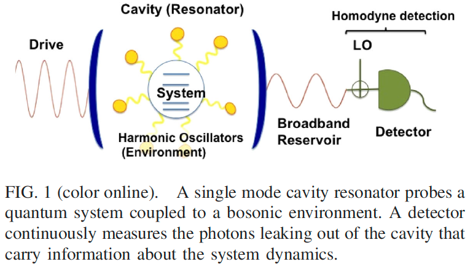
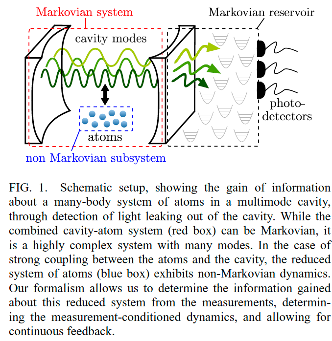

non-Markovの連続測定は可能なのか
Genuine quantum trajectories for non-Markovian processes [Heinz-Peter Breuer, PRA, 2004]
Introduction
連続測定としての物理的な解釈を持つSSEをnon-Markovに対しても構成できる
適切な拡張された状態空間 ($\mathcal{H}\otimes \mathbb{C}^3$) を用いることでMarkovian dynamicsにembeddgingする→大きな状態空間のMarkovian evolutionの一部分としてnon-Markovian dynamicsが現れる
大きな状態空間のMarkovian evolutionはLindblad型の時間依存generatorを持つMarkovianマスター方程式に従う
$\frac{d}{dt}\rho(t)=\mathcal{L}(t)\rho(t)$のとき$\mathcal{L}(t)$は必ずしも半群ではない. $\mathcal{L}(t_0)$ ($t_0\geq 0$の定数)なら力学的半群
map $V(t, s)$の導入
時間依存ジャンプ演算子に対する連続測定のストレートな一般化
Method
$\mathbb{C}^3=\mathrm{span}{|1\rangle, |2\rangle, |3\rangle}$
example
未読
Non-Markovian Continuous Quantum Measurement of Retarded Observables [Lajos Dio´si, PRL, 2008]
[H. P. Breuer, Phys. Rev. A 70, 012106 (2004)] could only be monitored by continuous measurement on a fictitious larger Hilbert space.
non-Markovianトラジェクトリは測定可能な単一システムのトラジェクトリ
von Neumann detectorを使って色々するみたいだが, von Neumann detectorが未習なので内容をちゃんと理解できた訳では無い
TLMEを仮定している訳では無い. equilibrium correlation function $\alpha (\tau-\sigma)$を使ってダイナミクスを記述している.
[L. Dio´si, Phys. Rev. A 42, 5086 (1990).]のnon-Markovianの測定理論の定式化と, NMSSE [L. Dio´si and W. T. Strunz, Phys. Lett. A 235, 569 (1997).]が等価であることをcorrelated von Neumann detectors in the weak measurement continuous limitを使って示した. すなわち、単一の量子系におけるハイゼンベルグ変数の遅延汎関数の値の連続読み出し
これを使おうと思うとまだ色々勉強が必要になりそう
Pure-State Quantum Trajectories for General Non-Markovian Systems Do Not Exist [Howard M. Wiseman+, PRL, 2008]
上の論文 [Lajos Dio´si, PRL, 2008] の証明には欠陥がある.
[J. Gambetta and H. M. Wiseman, Phys. Rev. A. 68, 062104 (2003).]の主張
NMSSEは連続測定に対する条件付き状態として解釈することができるが、これらの解を軌跡としてつなぎ合わせることは間違い
Sの状態が純粋であり続けるためには, bathがシステムから切り離されるのを連続的に観測し続けなければならないということである。
マルコフ場合は, 環境ははSystemと相互作用し、相互作用した後に移動するので、問題にならない. non-Markovの場合は, 環境が戻ってきてもう一度systemと相互作用する. つまり環境を観測し続けることは、disturbanceをシステムにフィードバックすることになり, 状態の平均を変える.
[Lajos Dio´si, PRL, 2008]は↑を踏まえて再導出をしたもの
本論文ではそれでも[J. Gambetta and H. M. Wiseman, Phys. Rev. A. 68, 062104 (2003).]の結論は変えないことを主張
[Lajos Dio´si, PRL, 2008]は それぞれのapparatusはsystemと一度だけ相互作用するため, systemの将来の時間発展に影響を与えずにbathを観測するのは簡単である. しかし, conditioned systemをpureにするためには既にsystemと相互作用したことのあるapparatusを観測するだけでなく, また相互作用していないものも観測する必要がある. まだ相互作用していないものを観測するにはsystemの将来の時間発展に影響を与えるnoiseを導入する必要がある. これはoriginal non-Markovian evolutionをon averageで復元するため.
本論文ではDiosiの手法での観測が, そのように時間発展に影響を与えることをexplicitな計算により示した. そしてそれはpure conditional stateを作ることに失敗することも示した.
non-Markovian pure-state trajectories cannot be interpreted as true quantum trajectories.
Continuous Measurement of a Non-Markovian Open Quantum System [A. Shabani, PRL, 2014]
Introduction
対象系はTLMEではない
システムはmarkovian (broadband) reservoirとカップリングしたプローブ共振器を経由して測定される
測定結果に条件付けられたシステムの状態をstochastic hierarchy equations of motion (SHEM) としての定式化 (non-Markov, strong decoherence effectsを取り入れている)
bosonic環境とカップリングした量子系の連続測定に対するcavity quantum electrodynamics theory (CQED, キャビティ内の原子と電磁場の相互作用)を開発
つまり, SHEMとして書けるようなbosonic環境にカップリングした量子系のCOED-based 連続測定の記述を示した
この理論の応用として, 連続測定によるデコヒーレンスダイナミクスのnon-Markov性の診断をする分光法
既存のSHEMはnon-Markovの測定としての解釈を記述していない
CQEDでは量子調和振動子はシステムと相互作用するプローブとして働く. 例えば光学だとその調和振動子はシングルモードのcavityとして実現される. ただしphoton lossがあるとする. 漏れてきたphotonから位相や振幅などの情報を抽出し, システムの情報を得る.
single cavity modeとカップリングし, additional bosonic環境と相互作用しているような, 任意の内部構造を持つ量子系に対して測定シナリオを定式化
具体例
Physical examples of such systems include double quantum dots probed by a microwave resonator [21], superconducting qubits with undesired coupling to 3D cavity modes [20,22], and atoms in an optical resonator [8]. Note that Gaussian fluctuations with a fermionic nature can be also effectively modeled as a bosonic bath [23,24].
A complex system coupled to a cavity
ハミルトニアンの定義. 仮定を入れたり, 周波数をいじったりしてハミルトニアンを計算(ちゃんと理解できていない)
System decoherence and cavity leakage
ハミルトニアンをダイナミクスを記述するような書き方に書き直す
System, Cavity, Environment, Reservoirの関係を定式化
ダイナミクスの記述をBorn近似, Markov近似を使うような通常のアプローチではなく, hierarchy equations of motion (HOEM) という, 近似を使わずに記述するような手法を用いる.

Continuous measurement
システムとのカップリングはキャビティの有効周波数を変える→cavityから出てくるphotonは位相にシステムの情報を含んでいる
位相はhomodyne detectionにより測定
観測値がシステムの状態だけを反映するためにleakage timeに仮定を入れて, 断熱的にcavity modeを削除する. これによりmain resultとしてSHEMが得られる
CQEDの文脈での議論をしているので, 総じて雰囲気を掴めた程度
Non-Markovian Quantum Dynamics in Strongly Coupled Multimode Cavities Conditioned on Continuous Measurement [Valentin Link, PRX Quantum, 2022]
Introduction
マルチモードCQEDは原子がそれら自身やcavityと強くカップリングしているが, その強いカップリングのせいで環境の連続測定の結果から原子の条件付き状態を推察するのは難しくなる. マルチモードは特に難しい.
本論文ではconditioned HOEM (連続測定・フィードバックの下での状態を正確に記述する) を用いて原子の状態を記述することで定式化を行う.
それを用いることでどのような観測でどのような情報が得られるのかを明らかにする.
具体化のためにキャビティQEDの例で説明されているが、本論文の理論は、検出器の前にあるより大きなマルコフ開放系と2つに分割できる非マルコフbathにcouplingした任意の量子系に適用できる。

「Genuine quantum trajectories for non-Markovian processes」などのようにnon-Markovian systemをより大きなMarkovian systemに埋め込む手法はよくあるが, 本手法はcavityの異なる測定スキームに対して、reduced systemの条件付き状態を決定する系統的で厳密な理論を提供し、様々な実験セットアップに直結する。